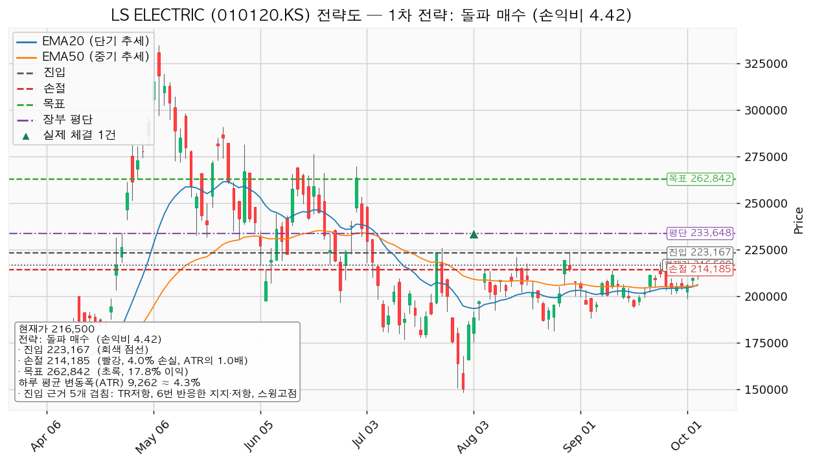
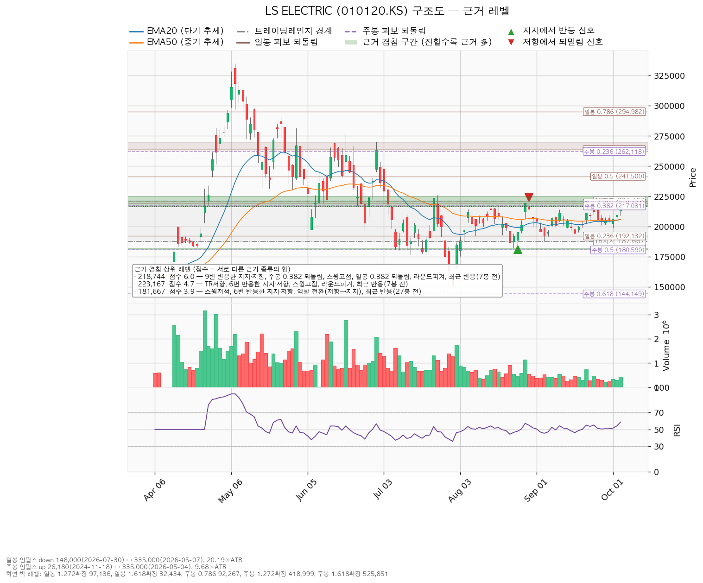
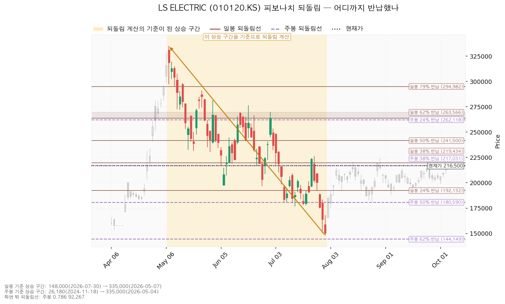
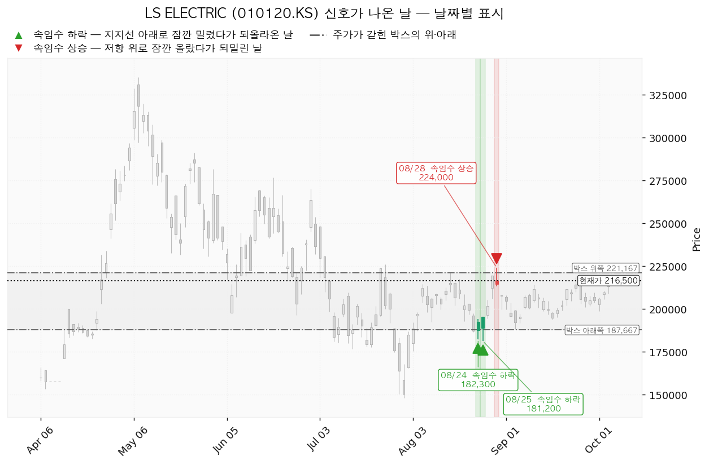

LS ELECTRIC(010120.KS)은 배전반·차단기·변압기 같은 전력기기와 전력 계통 자동화 설비를 만드는 한국 기업이며, 데이터센터·산업 설비용 전력 인프라와 해외 수출 비중이 큽니다.
| 구분 | 가격 | 판정 방식 | 현재가 216,500원 대비 | 상태 |
|---|---|---|---|---|
| 회복선(진입 조건) | 223,167원 | 일봉 종가 돌파 → 42주 추가 매수 | +3.08% (0.72 ATR) | 미충족 |
| 집행 손절 | 214,185원 | 장중 저가 터치 — 보유 39주에 지금부터, 추가 42주에는 진입한 경우에 | -1.07% (0.25 ATR) | 유지 중 |
| 관망 종료 기준 | 2026-10-22 실적 | 날짜 — 그때까지 223,167원 종가 돌파가 없으면 매수 계획 종료 — 새 리포트 대기 (보유분은 그대로) | — | 대기 |
| 확인선 | 221,167원 | 일봉 종가 돌파 후 되돌림에서 지지 | +2.16% (0.50 ATR) | 미돌파 |
| 폐기선(구조) | 187,667원 | 이탈 후 3거래일 내 회복 실패(또는 그 전에 178,405원 아래 종가) + 반등에서 저항으로 확인 | -13.32% (3.11 ATR) — 실무상 작동하지 않음 | 유지 중 |
① 성적표 — 상승 전환 기준선 213,813원이 충족됐고, 그 외는 미충족입니다. 10월 6일 종가 216,500원으로 213,813원을 넘었습니다(직전 리포트가 이 경우 재분석한다고 적은 조건이며, 이 리포트가 그 재분석입니다). 같은 날 최저가 209,000원은 진입선 195,050원에 닿지 않았고, 최고가 217,500원은 목표 218,744원에 1,244원 모자랐습니다. 손절 185,336원·폐기선 187,667원은 닿지 않았습니다.
② 좌표 이동. 박스(187,667~221,167원, 40봉)와 폐기선은 같습니다. 가격이 박스 위쪽으로 올라오며 눌림 매수 자리가 195,050원에서 212,563원으로 따라 올라왔고 그 손익비가 1:2.44에서 1:0.50으로 떨어져, 대표 셋업이 223,167원 돌파 매수로 바뀌었습니다. 조건 점검은 이동평균 정배열이 통과로 돌아서 5/9에서 6/9가 됐습니다.
③ 판단 — 조건 대기는 같고, 보유 39주의 손절을 185,336원에서 214,185원으로 올립니다. 현재가에서 보유를 이어가는 것은 212,563원 눌림 매수와 같은 위험을 지는 것인데 그 손익비가 1:0.50이라, 박스 하단까지 버티는 근거가 없어졌습니다.
| 항목 | 값 |
|---|---|
| 셋업 | 돌파 매수 — 모멘텀(저항을 넘으면 그 방향이 이어진다는 전제) · 구조 증명도 돌파 확인형 |
| 진입 / 손절 / 목표 | 223,167원 (일봉 종가) / 214,185원 / 262,842원 |
| 손익비 | 1:4.42 (손절 폭 0.97 ATR · 4.02%) |
| 진입 근거 겹침 | 박스 상단 · 6번 반응한 222,500원 가격대 · 224,000원 스윙고점 · 225,000원 라운드피겨 · 7거래일 전 반응 |
| 손절 근거 | 216,500~221,000원 겹침 구간 바로 아래 |
| 청산 | 262,842원에서 전량 매도 (목표 도달) — 단일 목표, 트레일링 없음 |
대표로 고른 근거는 손익비 4.42 × 돌파 확인형 증명도 × 진입 근거 겹침이며, 상대강도·거래량 배수(1.022배)로 순위가 바뀌지는 않았습니다. 눌림 매수는 손익비 1:0.50으로 패스입니다. 손절이 이미 겹침 구간 아래라 더 넓힌 구조적 손절 값이 따로 산출되지 않았으므로 1:4.42가 구조적 손절 기준 값입니다. 모멘텀 셋업에 고정 목표를 두는 것은 집행 정책(전량 매도·트레일링 없음)에 따른 것이며, 262,842원을 넘는 구간은 새 셋업으로 다시 잡습니다. 230,000원에서 절반을 덜어내면 손익비가 1:4.42에서 1:2.59로(230,000원 이후 본전 손절에 걸리면 1:0.38) 내려가므로 분할하지 않습니다. 계획 진입가 223,167원은 평단 233,648원 아래라 평단을 낮추는 매수입니다. 현재가 추격 비권장 조건에는 해당하지 않습니다.

| 단계 | 트리거 | 행동 |
|---|---|---|
| 1 관찰 | 진입 후 일봉 종가가 223,167원 아래로 마감 | 추가 매수만 중단. 집행 손절은 그대로 |
| 2 경고 | 이탈 후 3거래일 안에 223,167원을 종가로 회복하지 못함, 또는 그 전에 일봉 종가가 213,905원 아래로 마감 — 둘 중 먼저 오는 쪽 | 박스 안으로 되돌아갈 가능성이 우세해진 상태 |
| 3 무효 | 반등이 223,167원에서 막히고 그 아래로 되밀림 | 돌파 해석 폐기, 새 구조가 만들어질 때까지 관망 |
집행 손절 214,185원은 이 판정과 무관하게 장중 저가로 따로 작동하며, 장중 일시 이탈은 어느 단계에도 해당하지 않습니다. 폐기선 187,667원은 현재가에서 3.11 ATR 아래라 실무상 무효화 기준으로 작동하지 않습니다. 논지 무효화는 10월 22일 실적에서 내년 EPS(주당순이익) 추정(5,083원)이 하향으로 돌아서는 경우로 둡니다.
상승 전환 — 218,744원을 종가로 회복해 지지되고 221,167원을 종가로 넘기면 상승 확정이며, 223,167원 종가 위에서 42주를 매수합니다.
횡보 지속 — 187,667원을 지키며 221,167원 아래 박스가 이어지는 갈래이며, 매물 소화에 시간이 필요한 국면입니다. 추적 항목은 지지 테스트 거래량(혼조: 1.00 → 0.78 → 0.89배), 박스 안 저점(8/7 192,300원 → 8/25 181,200원 → 9/3 188,000원, 절하), 상승봉 대 하락봉 거래량비(0.95배)입니다. 이 갈래에서 214,185원에 닿으면 보유 39주는 전량 매도 (손절)되며, 그 뒤에도 223,167원 종가 돌파 매수는 10월 22일까지 유효합니다.
시나리오 폐기 — 187,667원을 이탈한 뒤 3거래일 안에 회복하지 못하거나 그 전에 178,405원 아래로 마감하고, 반등에서 187,667원이 저항으로 확인되면 다시 모으는 국면이라는 해석을 거둡니다. 보유분은 그 전에 214,185원에서 전량 매도 (손절)됩니다.
| 가격대 | 겹친 근거 |
|---|---|
| 221,167~225,000원 | 박스 상단 · 6번 반응한 가격대 · 224,000원 스윙고점 · 라운드피겨 · 7거래일 전 반응 |
| 216,500~221,000원 | 9번 반응한 216,500원 가격대 · 주봉 0.382 되돌림(217,031원) · 일봉 0.382 되돌림(219,434원) · 220,000원 라운드피겨 · 스윙고점 2개 |
| 210,000~214,500원 | 9번 반응한 211,750원 가격대 · 스윙고점 2개 · 라운드피겨 |
| 193,800~195,700원 | 스윙저점 · 9번 반응한 195,700원 가격대(저항→지지 역할 전환) |
| 187,667~192,132원 | 박스 하단 · 스윙저점 · 일봉 0.236 되돌림 |
박스는 728봉을 조회해 40·90·180봉 창을 시험한 결과 40봉 창(폭 3.62 ATR)에서 가격이 가장 잘 지켜졌고(180봉 창은 유효하지 않음), 직전 40봉 구간(167,367~257,500원)과 가격대가 겹쳐 같은 횡보의 연장으로 봅니다. 박스 안쪽은 저점 절하와 거래량비 0.95배로 중립이며, 박스 모양만으로 다시 모으는 국면이라고 판정할 근거는 없습니다.

일봉 되돌림은 5월 7일 335,000원 → 7월 30일 148,000원 하락 구간 기준이며 0.382(219,434원)가 바로 위 저항 구간에, 0.618(263,566원)이 목표 구간에 겹칩니다. 주봉은 2024년 11월 18일 26,180원 → 2026년 5월 4일 335,000원 상승 구간 기준으로 0.382가 217,031원, 0.236이 262,118원입니다.

신호일은 8월 24일(182,300원)·25일(181,200원) 속임수 하락과 8월 28일(224,000원) 고점을 살짝 넘겼다 되밀린 움직임입니다. 8월 28일의 실패 지점이 이번 진입 구간 안에 있어, 223,167원 종가 돌파는 그 실패를 되돌리는 확인이 됩니다.

후행 배수는 받지 못했고(결측), 선행 배수는 42.6배, 이익 성장률은 올해 +85.4% · 내년 +42.1%입니다. 목표주가는 23명 평균 275,813원, 최저 180,000원, 최고 350,000원이며 현재가는 최저 목표 위·평균 아래에 있습니다. 52주 고점 대비 -35.37% 내려온 동안 내년 EPS 추정은 90일 +13.0% 상향됐으므로 배수 수축이며 사업 악화가 아닙니다. 다만 최근 30일은 +0.1%(올해 추정 90일 +5.8% · 30일 +0.2%)로 상향이 멈췄고, 댈 수 있는 재평가 계기는 10월 22일 실적뿐입니다. 현금흐름은 적자가 아닙니다 — 2025년 12월 31일 결산 기준 영업현금흐름 2,999억원, 잉여현금흐름 904억원, 설비투자 +38.2%이므로 그 회수가 확인 항목입니다. 내년 EPS 5,083원 기준으로 평균 목표는 54.3배, 이 리포트의 목표 262,842원은 51.7배여서 현재 42.6배에서의 배수 확장에 기댑니다.
2026-10-22 3분기 실적 — 내년 EPS 추정이 다시 오르는지와 설비투자 회수 속도를 봅니다. 진입 전에 이 날이 오면 매수 계획을 종료하고 새 리포트를 기다립니다. 실적 직전 돌파로 진입하면 실적일 가격 공백이 214,185원 손절을 건너뛸 수 있습니다. 다음 실적 이후 2~3개 분기 구간은 확인할 자료가 없습니다.
손절 폭에서 역산한 비중은 계좌의 24.8%라 13% 한도가 실제 제약입니다. 계좌 139,498,400원의 13%는 18,134,792원이므로 223,167원에서 합계 81주까지이며, 보유 39주를 뺀 42주(9,373,000원 · 계좌의 6.72%)를 추가하면 합계 12.96%입니다. 손절까지의 손실은 지금 보유분 90,300원(0.06%), 진입 후 81주 727,547원(0.52%)이고, 테마 'AI전력' 합계는 9.27%에서 16.18%로 올라 한도 35% 안입니다.
하루 평균 변동폭이 주가의 4.28%인데 손절 폭은 0.97 ATR이라 평범한 하루 움직임 한 번으로 체결될 수 있고, 보유 39주는 현재가에서 0.25 ATR 거리입니다. 판정은 조건 대기 — 223,167원 종가 돌파 시 42주 매수(손익비 1:4.42)이며, 돌파 당일 거래량이 20일 평균의 1.3배를 넘는지(현재 미달)를 함께 봅니다.
ATR은 하루 평균 변동폭(9,262원)으로, 레벨까지의 거리를 평범한 하루 등락의 몇 배인지로 환산할 때 씁니다. 되돌림선은 큰 상승·하락 구간을 되돌린 비율(0.236·0.382·0.618)로 계산한 가격선입니다. EPS는 주당순이익이며, 손익비는 손실 1을 걸었을 때 기대하는 이익 배수입니다.